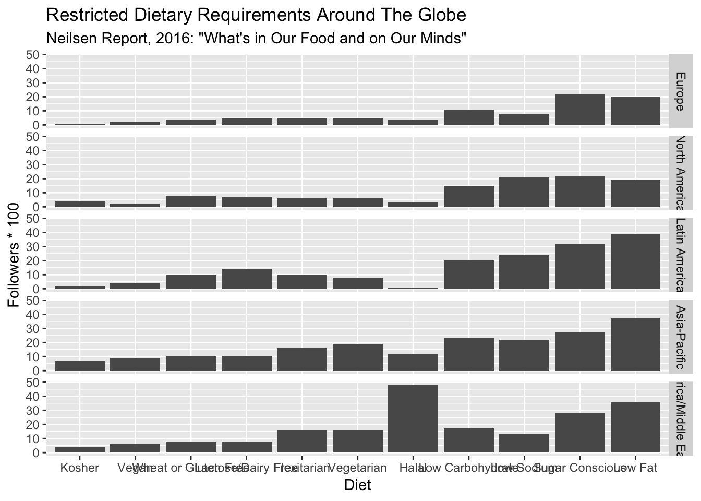

Chapter 6 Texas
df_year_income_level_texas = df %>% filter(State == "Texas") %>%
group_by(Year, `Income Level`) %>%
summarise(`Number of Households` = sum(`Number of Households`)) %>%
group_by(Year) %>%
mutate(`Percent of Households` = 100*`Number of Households`/sum(`Number of Households`))
ggplot(df_year_income_level_texas, aes(factor(Year, levels = 2016:2009), fill = `Income Level`)) + geom_col(aes(y = `Percent of Households`)) +
scale_fill_manual(values = colorRampPalette(brewer.pal(9,"RdYlGn"))(16)[16:1],
name = "", guide = guide_legend(reverse = F))+ xlab("")+
coord_flip() + ggtitle("Percentage of Households in each by income group across US States") + theme_gray() #+ facet_grid(Year~.)